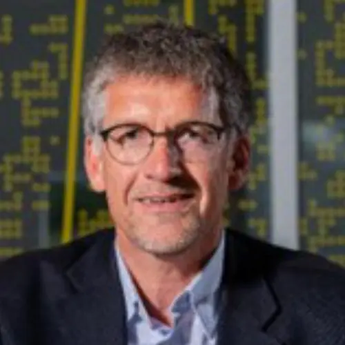

Australia member
Okke Batelaan
Name: Okke Batelaan Highest qualification and awarding university PhD in Engineering. Free University Brussels. Designation Strategic Professor Employer Flinders University Contact details: (i)Email: (ii)WhatsApp number/ Mobile number okke.batelaan@flinders.edu.au +61 4055 000…
Published 30 June 2022 · Updated 7 April 2025

| Name: | Okke Batelaan |
| Highest qualification and awarding university | PhD in Engineering. Free University Brussels. |
| Designation | Strategic Professor |
| Employer | Flinders University |
| Contact details:
(i)Email: (ii)WhatsApp number/ Mobile number |
|
| okke.batelaan@flinders.edu.au | |
| +61 4055 00015
08 8201 2269 |
|
| Home page link on your employer web site if available | https://www.flinders.edu.au/people/okke.batelaan |
| Key areas of interest | Shallow groundwater hydrology and modelling; recharge-discharge estimation and modelling; urban hydrology and distributed modelling; ecohydrology and impacts of landuse and climate change on groundwater systems. |
| Web links for your research profile on Google scholar; ORCID or ResearchGate (if available); only one of them please. | Google Scholar
https://scholar.google.com.au/citations?hl=en&user=hbNmp4EAAAAJ |
Okke Batelaan is Strategic Professor in Hydrogeology at Flinders University since 2012. Formerly he was faculty member at the Free University Brussels and the KU Leuven, Belgium. He has a broad experience in teaching integrated water resources management, groundwater hydrology, groundwater modelling, GIS and remote sensing for hydrological applications. He (co-)supervised to completion more than 200 Master and PhD students. He is an active researcher and participated in many projects in Europe, Africa, South America, Asia and Australia; a board member of the Goyder Institute for Water Research;; editor-in-chief of Journal of Hydrology: Regional Studies and associate editor for Journal of Hydrology.
Research Project
- Support to the development of a Groundwater Profile for Lao PDR and a Sustainable Groundwater Management Plan for the Sekong Basin. Australia-Mekong Water Facility, Australian Water Partnership
- Optimising the management of plantation, water and environmental assets. Collaborative Agreement (NIF084-1819), Funding: National Institute for Forest Products Innovation (NIFPI)
- Exploring opportunities to expand groundwater use for livelihood enhancement and climate change adaptation in Laos. Australian Centre for International Agricultural Research together with International Water Management Institute
Key Publications/Reports
- Enemark, T., Peeters, L., Mallants, D., Flinchum, B. and Batelaan, O., 2020, A systematic approach to hydrogeological conceptual model testing, combining remote sensing and geophysical data. Water Resources Research 56(8): e2020WR027578. https://doi.org/10.1029/2020wr027578.
- Vu, H.M., Shanafield, M., Nhat, T.T., Partington, D. and Batelaan, O., 2020, Mapping catchment-scale unmonitored groundwater abstractions: Approaches based on soft data. Journal of Hydrology: Regional Studies 30: 100695. https://doi.org/10.1016/j.ejrh.2020.100695.
- Esfahani, R.A., Batelaan, O., Hutson, J.L. and Fallowfield, H.J., 2020, Role of biofilm on virus inactivation in limestone aquifers: implications for managed aquifer recharge. Journal of Environmental Health Science and Engineering 18(1): 21-34. https://doi.org/10.1007/s40201-019-00431-5. https://rdcu.be/b30Rm
- Enemark, T., Peeters, L.J.M., Mallants, D. and Batelaan, O., 2019, Hydrogeological conceptual model building and testing: A review. Journal of Hydrology 569: 310-329. https://doi.org/10.1016/j.jhydrol.2018.12.007
- Bresciani, E., Goderniaux, P. and Batelaan, O., 2016, Hydrogeological controls of water table-land surface interactions. Geophysical Research Letters 43(18): 9653-9661, http://dx.doi.org/10.1002/2016GL070618.